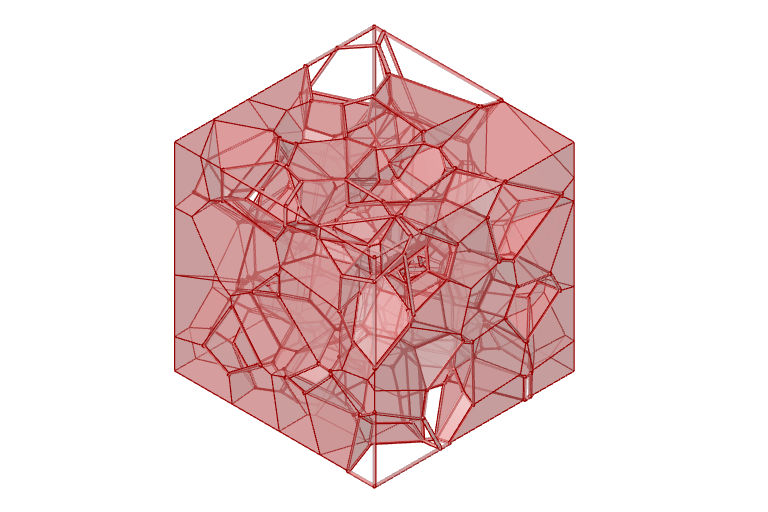
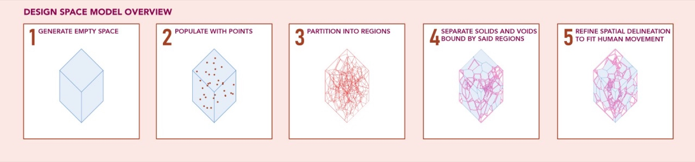
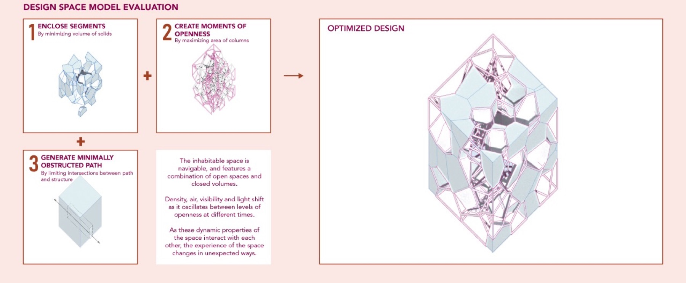
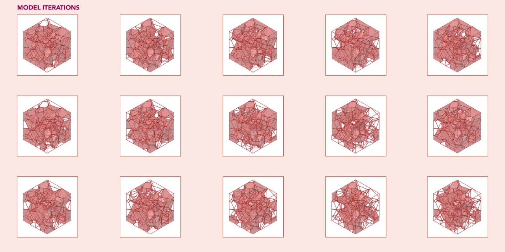
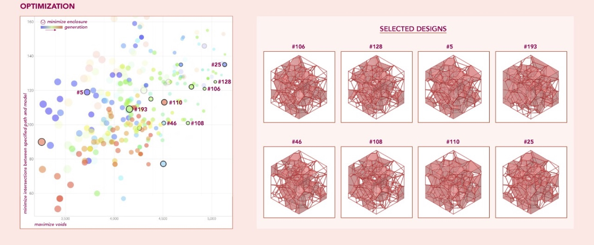

Liminal Space
Could a model design a space that’s never quite open and never quite closed?

01Context
I kept thinking about in-between spaces, the ones that feel exposed one moment and sheltered the next, where light, air and what you can see keep changing as you move. I wanted to see if a model could make one, and whether it would surprise me.
02Approach
I started with an empty box and scattered points through it, split it into cells, and let the model choose which cells turned solid and which stayed open. Then I drew a path through the middle, so a person could actually move through it.

I gave it three things to want: enough solid to feel enclosed, enough open space to breathe, and a path that stays clear. They pull against each other, which was the point.


03Outcome
Keeping the frame fixed held everything together, but it also limited how different the designs could get. So I spent a lot of time nudging parameters and running new generations to see what came out.
No design got everything it wanted. The ones I kept are the best compromises, and side by side they show the model working the trade-offs out.

Citi Bike access

Say hello.
Working on something for the built environment? I’d love to hear about it.